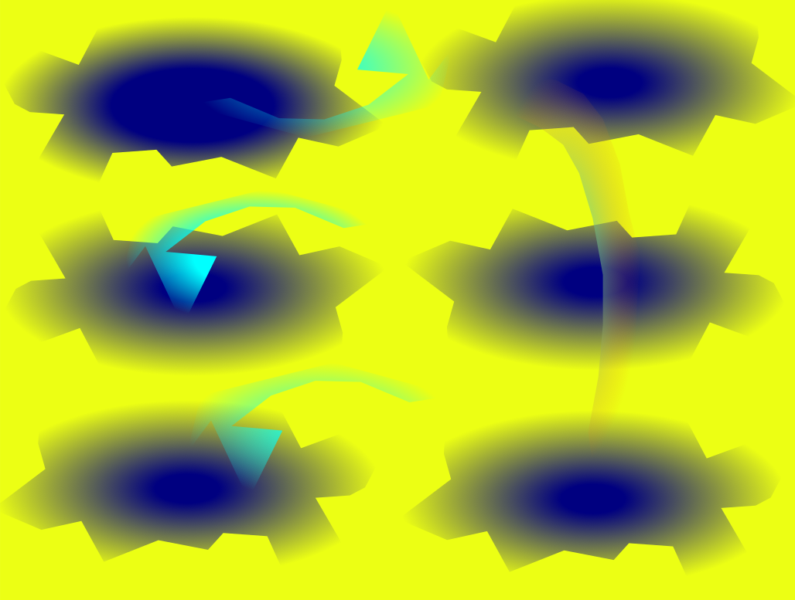

Digital Media Portfolio · Spring 2025 and Fall 2025
RaShane
DeLoach II
A year of creative exploration across digital tools — from frame-by-frame animation to vector art, audio production, video editing, and short film.

Digital Media Portfolio · Spring 2025 and Fall 2025
A year of creative exploration across digital tools — from frame-by-frame animation to vector art, audio production, video editing, and short film.
Bio
Systems and Cybersecurity Student at Georgia Gwinnett College with hands-on experience in raster and vector design, audio production, video editing, and short-form filmmaking. Comfortable working across the full creative pipeline — from concept to final export.
Skills & Tools
01 / About
Five projects across two courses — Digital Media and Intro to Film — each applying a different professional tool to a real creative brief.
Tools Used
02 / Projects


03 / Reflection
Advice to Future Students
"My advice to anyone taking this class would be to read, write down notes, and apply them to your projects and assignments. Writing down notes help with recollecting information and applying what you learned in class to your work in this course will help with understanding how certain concepts work and why. Prior to taking this class, I would have benefitted from using applications like Gimp, Inkscape, Audacity, and Shotcut sooner. Overall, I enjoyed taking this class while learning about how to create and manipulate digital media."
04 / Contact
Let's
connect.
Open to internships, creative collaborations, and freelance opportunities in digital media and film production.